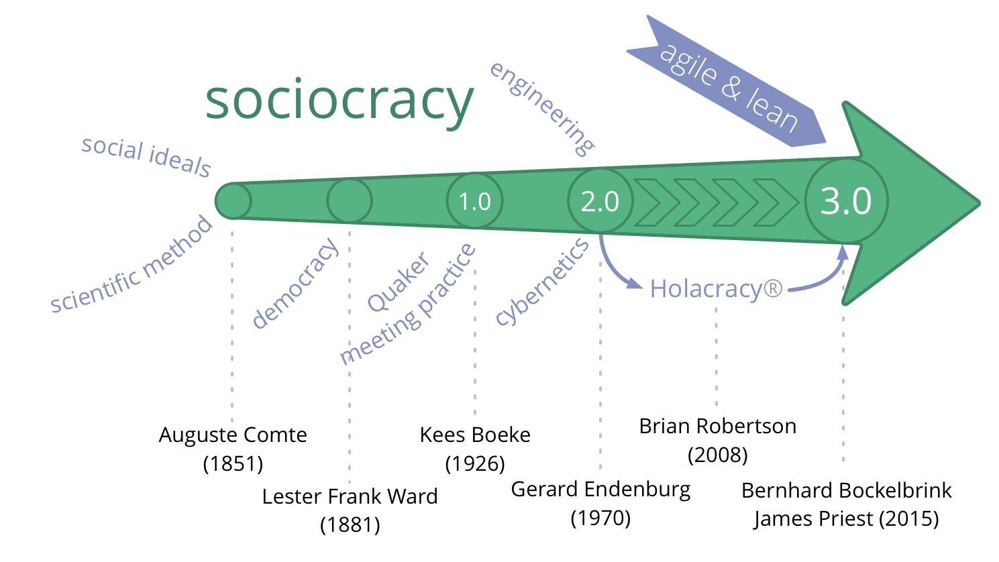
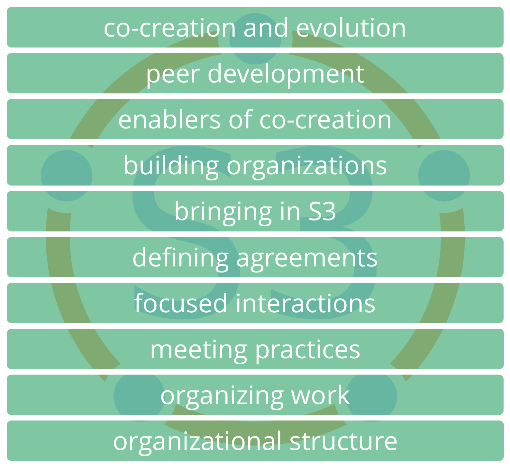
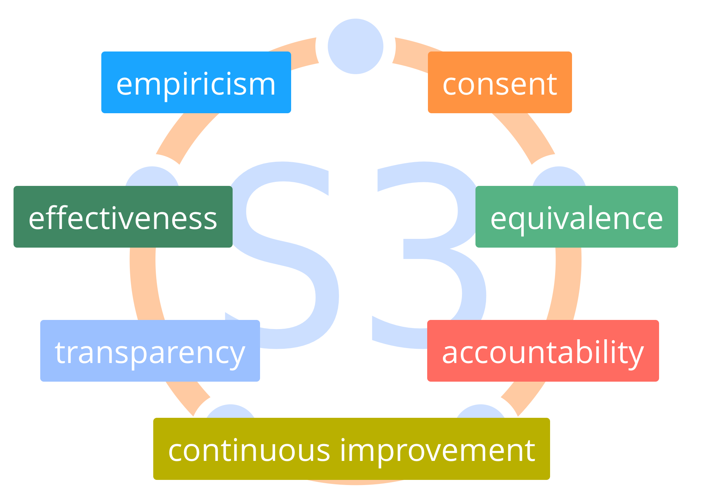
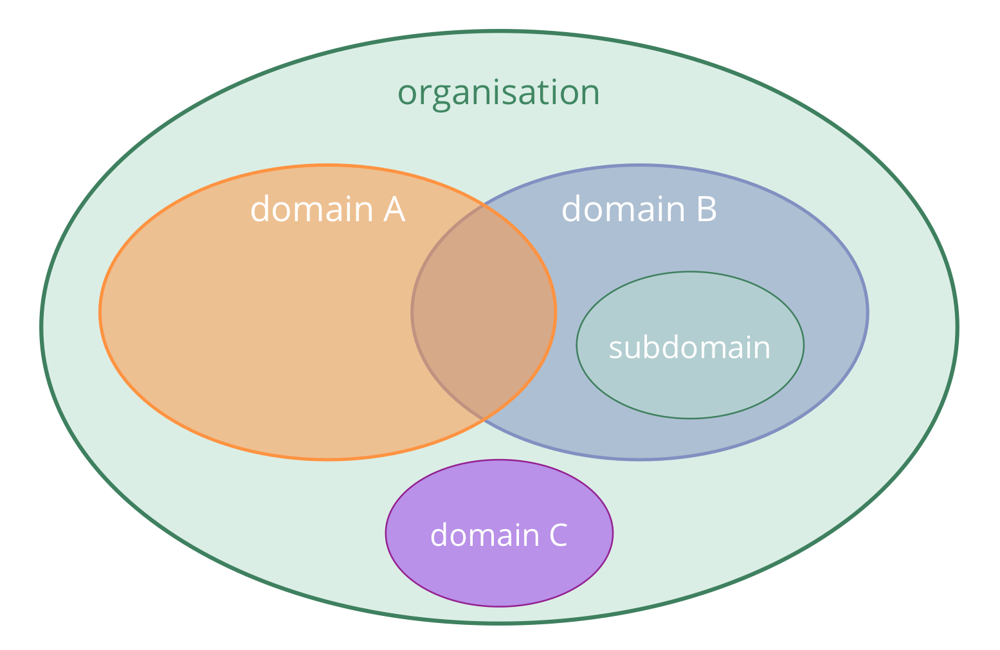

Introduction
Sociocratie 3.0 - Un guide pratique pour évoluer des organisations agiles et endurantes
Une collaboration efficace à tous niveaux
- Basée sur les principes : une façon cohérente pour cultiver l’intégrité organisationnelle et développer un état d’esprit agile et sociocratique
- flexible: adaptable patterns, independent and mutually reinforcing, to help you with all aspects of collaboration
- Libre : licence Creative Commons Free Culture License
Quelle est son utilité ?
Sociocratie 3.0 - a.k.a. “S3” - vous apporte une collection exhaustive de règles et de pratiques ayant prouvé leur efficacité auprès de différentes organisations, pour ** améliorer les performances, l’alignement, la complétion et le bien-être.</p>
S3 vous aide à découvrir comment atteindre vos objectifs et naviguer dans la complexité d’un projet de manière optimale, sans le besoin d’une réorganisation radicale ou d’une initiative de changements massifs:
-
Démarrez par votre zone d’activité recelant les plus grands besoins, sélectionnez une pratique ou plus à essayer, avancez à votre rythme et développez vos compétences au fur et à mesure.
-
Peu importe votre situation hiérarchique dans l’organisation, vous découvrirez des pratiques pertinentes et utiles.
Contenus
- un bref récapitulatif des concepts basiques sur lesquels S3 se repose
- une description de toutes les pratiques S3
- une annexe contenant les changements apportés, les remerciements, des informations sur nos auteur.e.s et licences, un glossaire et un index
Influences et histoire

Les concepts de base
Avant de se plonger dans nos contenus, prenez le temps de vous familiariser avec des concepts simples de S3 :
- qu’est-ce qu’une pratique ?
- s’approprier les sept principes
- moteurs, valeur et gaspillage
- domaines, délégation et responsabilisation
- gouvernance, auto-organisation et semi-autonomie
Si vous ne comprenez pas un des termes, consultez notre glossaire.
Pratiques

Une pratique est un modèle pour appréhender correctement un contexte spécifique.
- Les pratiques S3 sont découvertes par l’observation de la manière dont plusieurs organisations résolvent leurs problèmes et répondent aux opportunités potentielles
- Les pratiques S3 peuvent être évoluées et adaptées pour convenir à différents contextes
- Les pratiques sont regroupées par sujets en 10 catégories différentes
Toutes les pratiques sont basées sur les Sept Principes

Les sept principes
Efficacité Dédier du temps seulement à ce qui vous rapproche de la réalisation des objectifs.
Consentement: Faire des choses quand il n’y a pas de raisons de ne pas les faire.
Empirisme: Tester toutes les hypothèses par des expériences, des révisions continuelles et des falsifications.
Les sept principes (cont.)
Amélioration continue: Évoluer par incréments pour faciliter un apprentissage empirique constant.
Équivalence: Impliquer les personnes impactées dans les prises de décisions et les évolutions.
Transparence: Rendre toutes les informations accessibles à tous les membres d’une organisation, à moins qu’il faille préserver leur confidentialité.
Responsabilisation: Répondre lorsque nécessaire, faire ce qu’on s’est engagé de faire et assumer la responsabilité de l’avancement de l’organisation.
Moteurs
Un moteur est la motivation d’un groupe ou d’une personne pour répondre à une situation particulière.
Moteurs :
- peuvent être utilisés pour déduire des buts, objectifs, missions, visions, finalités
- peuvent changer au fil du temps
Moteurs, valeur et gaspillage
La valeur est l’importance ou l’utilité d’un élément en relation à un moteur.
Le gaspillage est tout ce qui n’est pas nécessaire (essentiel) pour - ou qui empêche - la réponse à un moteur.
L’adoption des concepts de valeur et gaspillage permet l’accès à plusieurs outils et idées du Lean Management et du développement logiciel Lean (Lean Software Development) pour aider les organisations à fonctionner avec la Sociocratie 3.0 :
- cartographie de flux de valeur
- différentes stratégies pour éliminer le gaspillage
- la Méthode Kanban
Domaines

Un domaine est une zone d’influence, activité et prise de décisions distincte au sein d’une organisation.
Tous les domaines se situent dans le domaine global d’une organisation et peut chevaucher et / ou être pleinement contenus au sein d’autres domaines.
Les domaines sont délégués à des responsables (une unité, un département, une équipe ou des individus) du domaine, au sein de ses contraintes prédéfinies sur l’influence et l’autonomie.
Déléguer les domaines
Ceux qui délèguent un domaine (les * déléguants *) restent responsables de ce domaine, et définissent souvent :
- les responsabilités clés (tâches essentielles et délégation des prises de décision)
- les contraintes pour l’autonomie et l’influence pour les délégués au domaine, souvent liées à l’organisation (budget, ressources, niveaux de délégation, compte-rendus)
Moteurs et Domaines

Un domaine peut être défini par rapport à un moteur organisationnel - soit le moteur principal du domaine - par l’ensemble des sous-domaines qu’il pourrait être intéressant d’examiner en répondant au moteur principal :
- les responsabilités clés découlent directement du moteur principal du domaine
- les contraintes se rapportent au contexte général de l’organisation
Domaines et Responsabilisation

- la responsabilisation s’applique à toutes les ententes, incluant l’organisation elle-même, les cercles, et les rôles
- la responsabilité première de chaque membre est de collaborer efficacement pour répondre aux moteurs organisationnels
- les individus et les groupes sont responsables du travail qu’ils accomplissent, ainsi que de leur apprentissage et de leur développement. L’organisation doit fournir un soutien adéquat
- chaque membre d’une organisation est responsable de l’alignement de ses actions avec ses valeurs organisationnelles
Gouvernance, semi-autonomie et auto-organisation
Gouvernance: Continuellement décider des actions nécessaire pour atteindre les objectifs et définir des contraintes sur la façon de procéder.
Auto-gouvernance: Ensemble de personnes se gouvernant elles-mêmes selon les contraintes d’un domaine.
Auto-organisation: Des personnes coordonnant leur travail selon des contraintes définies par la gouvernance.
Opérations (Faire le travail) : Des gens accomplissant ce qui doit être fait, guidés par leur coordination et leur gouvernance.
Semi-autonomie: Des personnes étant autonomes pour créer de la valeur, limitées par les contraintes de leur domaine.
Gouvernance vs Opérations
Repérer, évaluer et évoluer les décisions prises en vue d’atteindre les objectifs permet à une organisation d’apprendre et s’améliorer en continu.
Est-ce que cela demande ou profite d’une décision de groupe ou individuelle ?
- oui : gouvernance
- non couverte par une entente préalable
- doit être acceptée, décidée ou amendée
- non : opérations
- couvertes par les ententes précédentes (les responsables peuvent agir librement)
- doivent être réalisées